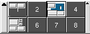

1.2. The Workspaces
- KDE supports more than one workspace in which one can put windows.
- You can switch to a different workspace by pressing its number in the workspaces display at the bottom panel.
 - When you switch to a different workspace, and return to the original, you will find all the windows that were opened in the original.